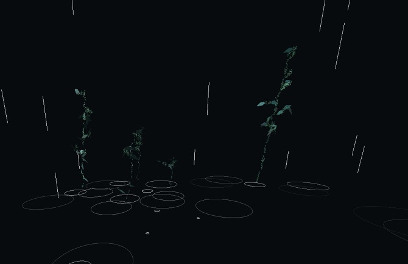
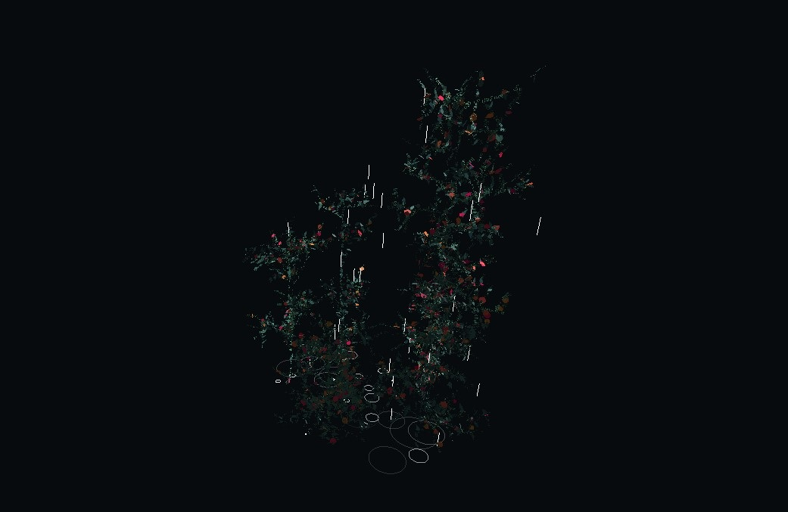
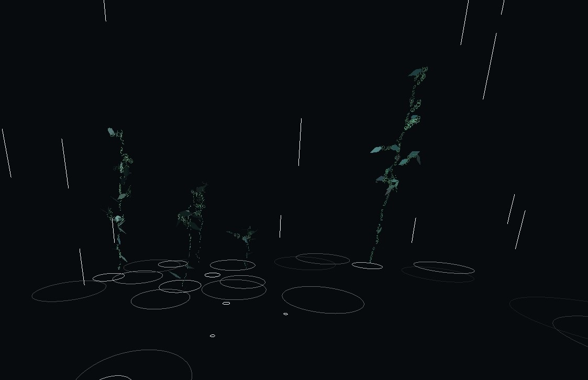
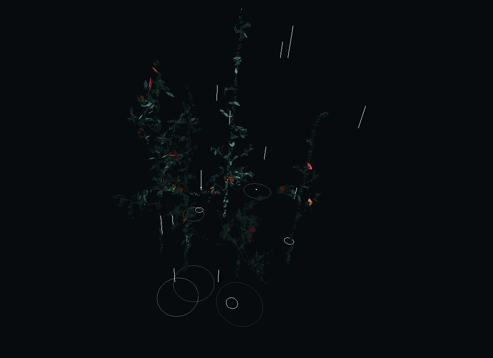
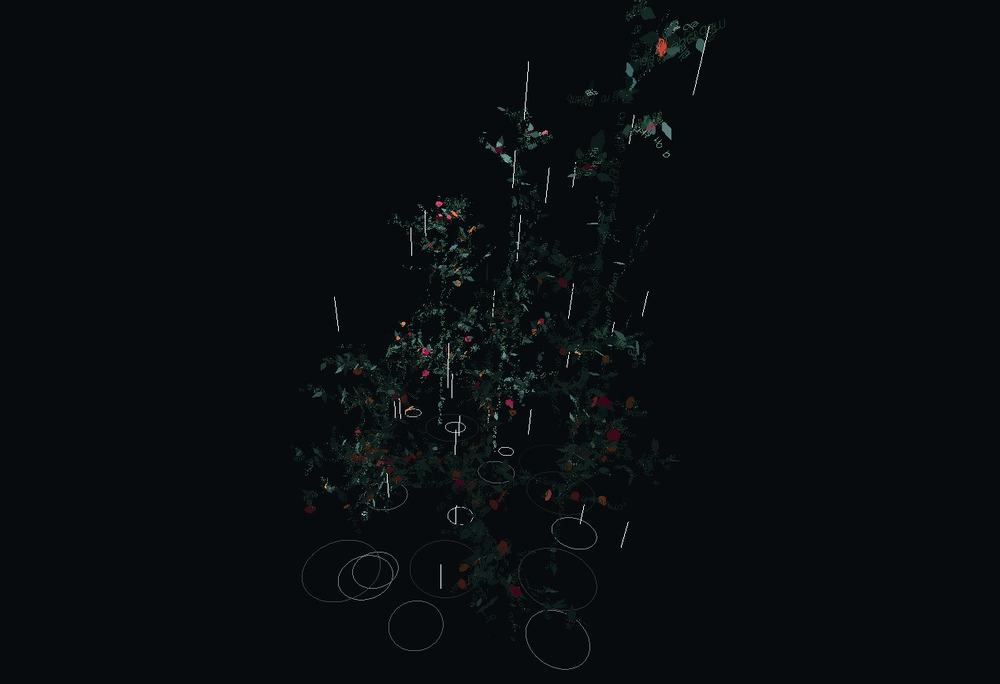

bosque - 2020
+ expuesto en voltaje, salón de arte y tecnología, bogotá, colombia, 2020
- - - - - - - - - - - - - - - - - - - - - - - - - - - - - - - - -
+ shown in voltaje, arts and technology salon, bogotá, colombia, 2020
co-creado con greg sadetsky .
bosque es una pieza de animación generativa acerca de la esperanza y el deseo en tiempos difíciles. presenta una simulación de un sector de bosque que crece mecido por el viento.
la obra puede verse en vivo acá .
los troncos y ramas de los árboles están compuestos de oraciones de esperanza en relación a la situación creada por la pandemia y la subsiguiente crisis social y económica que enfrentan los pueblos de nuestros países latinoamericanos. estas oraciones provienen de un grupo diverso de personas y responden a necesidades y deseos de orden personal o colectivo. así, cada arbusto y árbol se encuentra conformado por anhelos y esperanzas que crecen y cobran volúmen conforme avanza la animación.
los árboles de este bosque digital se mecen en el viento. este viento es en realidad una reproducción del viento del oeste del noroeste patagónico (mi región natal y que habito actualmente). es importante mencionar que dicho viento del oeste no sólo es el predominante de la región, sino que además es el que trae las lluvias (cruzando la cordillera desde la costa pacífica chilena) que posibilitan el crecimiento de la vegetación y el desarrollo de nuestros ecosistemas de montaña.
este proyecto está anclado en la necesidad que siento de abrigar esperanzas en función de la situación sanitaria y social que se nos presenta. la decisión formal de representar este proceso con un bosque que crece lentamente se debe a la experiencia personal de haber presenciado durante mi infancia el quemarse y destruirse de los bosques de mi región local, y de haber tenido la oportunidad de ver su regeneración y nuevo crecimiento a lo largo de los años. esta pieza al mismo tiempo representa una desviación de los temas habituales de mi trabajo, en función de la necesidad vital de adoptar una óptica de esperanza y deseo de prosperidad frente los acontecimientos presentes.
seleccionado y exhibido en voltaje, salón de arte y tecnología de la ciudad de bogotá, colombia en octubre de 2020.
creado con p5.js y three.js




